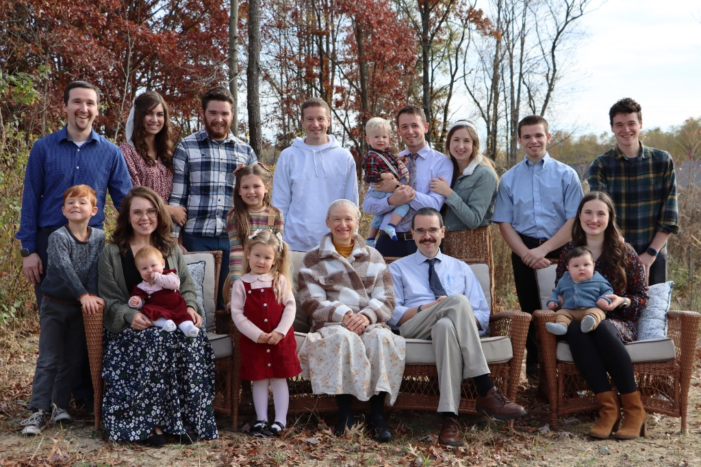

Paul Manwiller
Pastor Paul originally planned to be a teacher. He studied literature and history at the University of Michigan and Wayne State. He earned his B.S. there and did student teaching in Detroit.
Although he enjoyed teaching high school English, Pastor Paul began to sense that God was preparing him to teach something yet more important — the Bible. To prepare for the work of a pastor, Paul and his wife, Nora, moved to Illinois where he earned a Master of Divinity (M.Div.) from Trinity Seminary.
After seminary the Manwillers moved to Paul's home state, Alaska. There Paul pastored a church in a remote town on Alaska's coast. Then the Manwillers moved back to Michigan in 1992 where Pastor Paul started Hope Community Church.
"My heart is to see every person encounter the living God — not just to know about Him, but to truly know Him."
Pastor Paul envisions a church that will meet the needs of people in this area who need a church home. People with serious questions about the Bible and the Christian faith. People who enjoy learning and growing in their spiritual life.
📖 Bible-Led
Every message grounded in Scripture.
🙏 Prayer-Centered
A church built on conversation with God.
🤝 Community-Driven
Faith lived out together, not in isolation.
❤️ Grace-Filled
A place for every person, exactly as they are.

The Manwiller Family
He and his wife, Nora, met at the University of Michigan. They were married in 1983. They have six boys: David (not pictured), Peter and his wife Rachel, daughter Mary, son, James, daughter, Debbie; Joseph, Timothy, John and his wife Hannah; Daniel and his wife Elisabeth (not pictured).